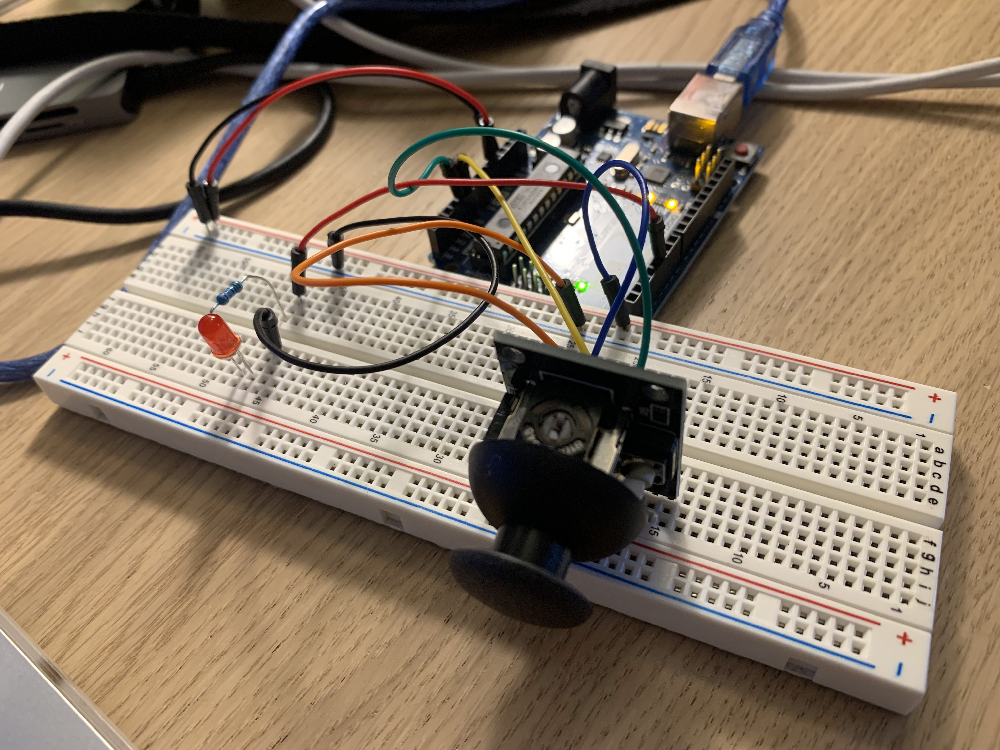

Assignment 6:Talking to the Web!

In this project, we are attempting to have things change in the real world and vice versa. Though it was a tough challenge, I was able to use my joystick to control a shape on the web by reading the values of the physical arduino to the web. However, I wasn't able to finish in making the keys pressed to light up the LED on the breadboard because of short time, though there was a set it up. For the LED I used a 220 Ohms resistor based off of previous calculations in previous assignments. This hw was especially challenging because there are so many moving parts to keep track of.


void setup() {
// put your setup code here, to run once:
Serial.begin(9600); // initialize serial communications
pinMode(5, OUTPUT);
}
void loop() {
// put your main code here, to run repeatedly:
int s1 = analogRead(0);
int s2 = analogRead(1);
Serial.print(s1);
Serial.print(",");
Serial.println(s2);
if (Serial.available() > 0) { // if there's serial data
int inByte = Serial.read(); // read it
Serial.write(inByte); // send it back out as raw binary data
analogWrite(5, HIGH); // use it to set the LED brightness
} else {
analogWrite(5, LOW);
}
}

let serial;
let latestData = "waiting for data";
let xVal;
let yVal;
var data;
function setup() {
createCanvas(windowWidth, windowHeight);
serial = new p5.SerialPort();
serial.list();
serial.open('/dev/tty.usbmodem141301');
serial.on('connected', serverConnected);
serial.on('list', gotList);
serial.on('data', gotData);
serial.on('error', gotError);
serial.on('open', gotOpen);
serial.on('close', gotClose);
}
function serverConnected() {
print("Connected to Server");
}
function gotList(thelist) {
print("List of Serial Ports:");
for (let i = 0; i < thelist.length; i++) {
print(i + " " + thelist[i]);
}
}
function gotOpen() {
print("Serial Port is Open");
}
function gotClose(){
print("Serial Port is Closed");
latestData = "Serial Port is Closed";
}
function gotError(theerror) {
print(theerror);
}
function gotData() {
let currentString = serial.readLine();
trim(currentString);
if (!currentString) return;
// console.log(currentString);
latestData = currentString;
let sensors = split(latestData, ",");
console.log(sensors.length);
xVal = map(sensors[0], 516, 1023, width/2, width);
yVal = map(sensors[1], 516, 1023, height/2, height);
console.log(xVal);
console.log(yVal);
function draw() {
background("#2277A3");
fill("#55CAFE");
text(latestData, 10, 10);
ellipse(xVal, yVal, 30, 30);
// Polling method
/*
if (serial.available() > 0) {
let data = serial.read();
ellipse(50,50,data,data);
}
*/
}
function keyPressed() {
if (key ==='H' || key ==='L') { // if the user presses H or L
serial.write(key); // send it out the serial port
}
}